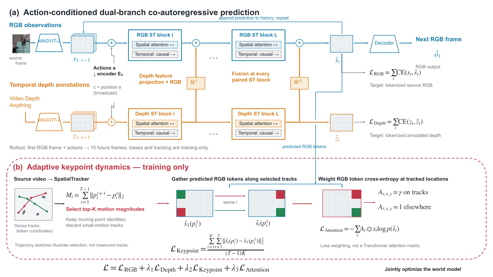
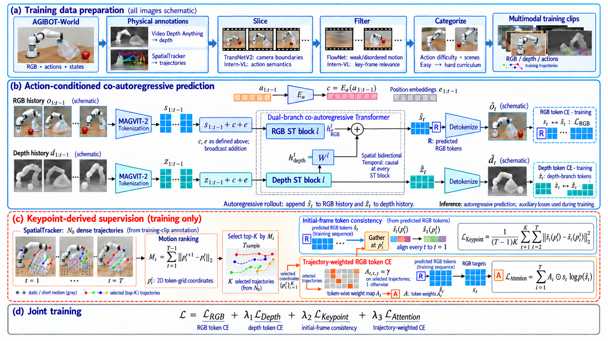
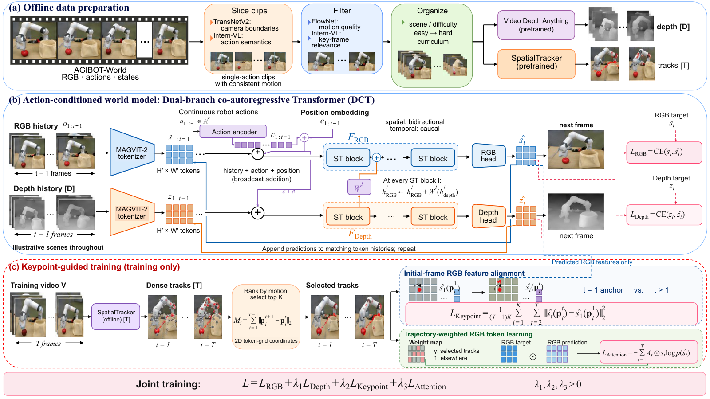
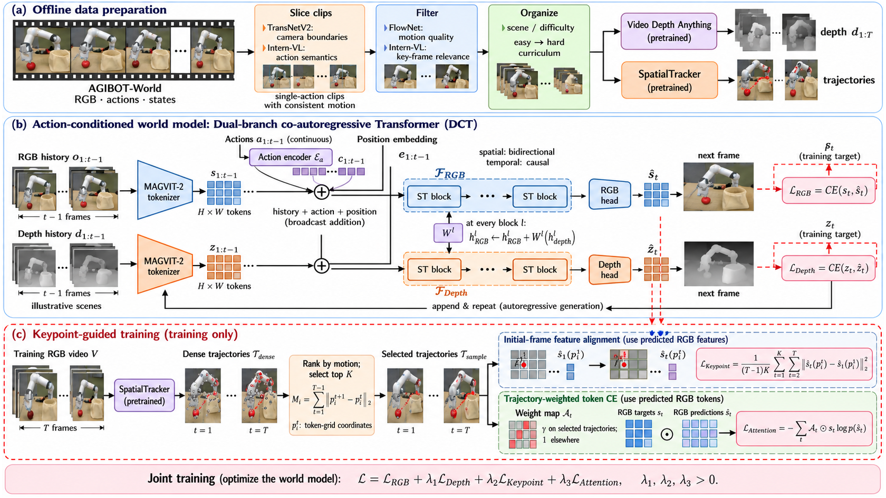
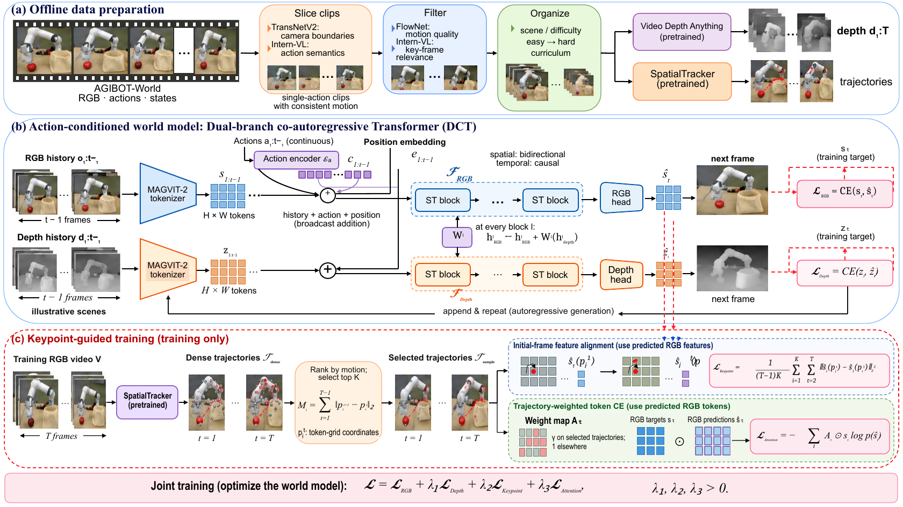

三方法输出Native历史 PDF 输入；原生 PPTX。ImageMethod 输入，内置 image；已用3次edit，仍需修改。HybridMethod 输入；作者模型复审通过，非独立评审。Native PPTX · Hybrid PPTX · Hybrid PDF
Hybrid 三阶段独立图像方案Decomposer 重建FigureCrafter 完善重建保真阈值未通过，问题明确交给原生修订；最终作者模型复审通过。保留27个原子图像资产的字节，内部仍为栅格。公式采用原生文字与线条组合，不宣称OfficeMath语义公式。Decomposer 原始重建 PPTX · 完善后 PPTX